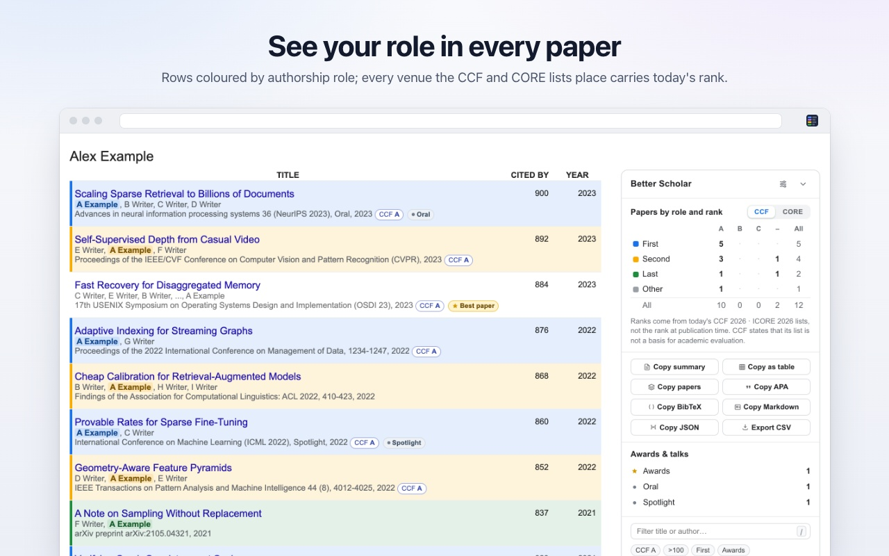

奖项与报告
最佳论文、时间检验奖，以及 Oral、Spotlight 或 Highlight 报告的标签。数据来自作者本人的说明和官方奖项页面。
一款免费的 Chrome 扩展，面向 Google Scholar 个人主页。它按你的作者角色为每篇论文着色，显示其发表场所的 CCF 和 CORE 等级，并用一张表统计你的论文。
免费开源 · 支持 Chrome、Edge、Brave 及其他 Chromium 内核浏览器 · 30 种界面语言

两篇虚构的论文，发表于真实的场所。每一步都显示扩展自身的代码在其中找到了什么。
最佳论文、时间检验奖，以及 Oral、Spotlight 或 Highlight 报告的标签。数据来自作者本人的说明和官方奖项页面。
Scholar 会用“…”省略较长的作者列表，这可能会隐藏你的角色。点一下，即可从 Scholar 的论文页面读取完整列表。
Scholar 有时会把同一篇论文列出两次。打开这个开关后，它们会合并为一条，并把引用数相加。
面板的每个部分都有各自的开关。可以选择颜色、各部分的顺序，以及为它们取你自己的名字。
无需账号，没有分析统计，也没有追踪。所有工作都在你的浏览器中完成，等级列表就包含在扩展里。
扩展支持你的语言。它还可以用你选择的语言打开 Scholar 本身。
这是扩展真正的设置页面。改动一项设置，预览随之变化。将鼠标指向预览中的某个部分，即可隐藏、移动或重命名它。
每种格式一个按钮：用于简历、基金申请表、LaTeX 或电子表格。下面是四篇虚构论文的实际输出。
@inproceedings{author2025sample,
title = {Sample paper 1},
author = {A Author and B Writer and C Writer and D Writer},
booktitle = {ICLR 2025 (Oral)},
year = {2025},
note = {CCF A, CORE A*, Oral}
}
@inproceedings{writer2024sample,
title = {Sample paper 2},
author = {B Writer and A Author and C Writer},
booktitle = {NeurIPS 2024},
year = {2024},
note = {CCF A, CORE A*, Best paper (NeurIPS 2024)}
}
@inproceedings{author2024sample,
title = {Sample paper 3},
author = {A Author* and B Writer* and C Writer},
booktitle = {CVPR 2024 (Highlight)},
year = {2024},
note = {CCF A, CORE A*, Highlight}
}
@inproceedings{writer2023sample,
title = {Sample paper 4},
author = {B Writer and C Writer and D Writer and A Author},
booktitle = {ACL 2023 (Spotlight)},
year = {2023},
note = {CCF A, CORE A*, Spotlight}
}Author, A., Writer, B., Writer, C., & Writer, D. (2025). Sample paper 1. *ICLR 2025 (Oral)*.
Writer, B., Author, A., & Writer, C. (2024). Sample paper 2. *NeurIPS 2024*.
Author*, A., Writer*, B., & Writer, C. (2024). Sample paper 3. *CVPR 2024 (Highlight)*.
Writer, B., Writer, C., Writer, D., & Author, A. (2023). Sample paper 4. *ACL 2023 (Spotlight)*.{
"owner": "A Author",
"source": "ccf",
"total": 4,
"papers": [
{
"id": "sample-1",
"title": "Sample paper 1",
"authors": "A Author, B Writer, C Writer, D Writer",
"venue": "ICLR 2025 (Oral)",
"year": 2025,
"citations": 48,
"role": "first",
"status": "found",
"highlighted": true,
"type": "conference",
"rank": {
"ccf": {
"tier": "A",
"name": "International Conference on Learning Representations"
},
"core": {
"rank": "A*",
"name": "International Conference on Learning Representations"
}
},
"marks": [
"Oral"
],
"url": ""
},
{
"id": "sample-2",
"title": "Sample paper 2",
"authors": "B Writer, A Author, C Writer",
"venue": "NeurIPS 2024",
"year": 2024,
"citations": 133,
"role": "second",
"status": "found",
"highlighted": true,
"type": "conference",
"rank": {
"ccf": {
"tier": "A",
"name": "Conference on Neural Information Processing Systems"
},
"core": {
"rank": "A*",
"name": "Conference on Neural Information Processing Systems"
}
},
"marks": [
"Best paper (NeurIPS 2024)"
],
"url": ""
},
{
"id": "sample-3",
"title": "Sample paper 3",
"authors": "A Author*, B Writer*, C Writer",
"venue": "CVPR 2024 (Highlight)",
"year": 2024,
"citations": 27,
"role": "cofirst",
"status": "found",
"highlighted": true,
"type": "conference",
"rank": {
"ccf": {
"tier": "A",
"name": "IEEE/CVF Conference on Computer Vision and Pattern Recognition"
},
"core": {
"rank": "A*",
"name": "IEEE/CVF Conference on Computer Vision and Pattern Recognition"
}
},
"marks": [
"Highlight"
],
"url": ""
},
{
"id": "sample-4",
"title": "Sample paper 4",
"authors": "B Writer, C Writer, D Writer, A Author",
"venue": "ACL 2023 (Spotlight)",
"year": 2023,
"citations": 215,
"role": "last",
"status": "found",
"highlighted": true,
"type": "conference",
"rank": {
"ccf": {
"tier": "A",
"name": "Annual Meeting of the Association for Computational Linguistics"
},
"core": {
"rank": "A*",
"name": "Annual Meeting of the Association for Computational Linguistics"
}
},
"marks": [
"Spotlight"
],
"url": ""
}
]
}1. **Sample paper 1**
A Author, B Writer, C Writer, D Writer
*ICLR 2025 \(Oral\)* · **CCF A · CORE A\*** · ★ Oral · Cited by 48
2. **Sample paper 2**
B Writer, A Author, C Writer
*NeurIPS 2024* · **CCF A · CORE A\*** · ★ Best paper \(NeurIPS 2024\) · Cited by 133
3. **Sample paper 3**
A Author\*, B Writer\*, C Writer
*CVPR 2024 \(Highlight\)* · **CCF A · CORE A\*** · ★ Highlight · Cited by 27
4. **Sample paper 4**
B Writer, C Writer, D Writer, A Author
*ACL 2023 \(Spotlight\)* · **CCF A · CORE A\*** · ★ Spotlight · Cited by 215Year,Title,Authors,Role,Venue,CCF,CORE,Awards & talks,Citations
2025,Sample paper 1,"A Author, B Writer, C Writer, D Writer",First author,ICLR 2025 (Oral),A,A*,Oral,48
2024,Sample paper 2,"B Writer, A Author, C Writer",Second author,NeurIPS 2024,A,A*,Best paper (NeurIPS 2024),133
2024,Sample paper 3,"A Author*, B Writer*, C Writer",Co-first author,CVPR 2024 (Highlight),A,A*,Highlight,27
2023,Sample paper 4,"B Writer, C Writer, D Writer, A Author",Last author,ACL 2023 (Spotlight),A,A*,Spotlight,215在个人主页上按 / 键，即可搜索其全部论文。在搜索词中加入运算符，即可筛选列表。
cites:>100 cites:>=50 cites:<10引用数高于或低于某个数字的论文。
ccf:a ccf:b core:a*发表在指定 CCF 或 CORE 等级场所的论文。
role:first role:last role:cofirst你是第一作者、共同第一作者、第二作者或末位作者的论文。
year:>=2020 year:2023 age:<5发表于某一年之前、之后或当年的论文，或近几年发表的论文。
has:award has:talk获得最佳论文奖或时间检验奖的论文，以及有 Oral、Spotlight 或 Highlight 报告的论文。
按一个键即可清除搜索、选中的单元格和所有筛选条件。
这些数字在构建时由扩展的代码与数据统计得出。会随每次修复而增加的数字均已向下取整。
chrome://extensions，并开启“开发者模式”。Edge、Brave 及其他 Chromium 浏览器的安装步骤相同。之后可能会有 Chrome 应用商店版本。